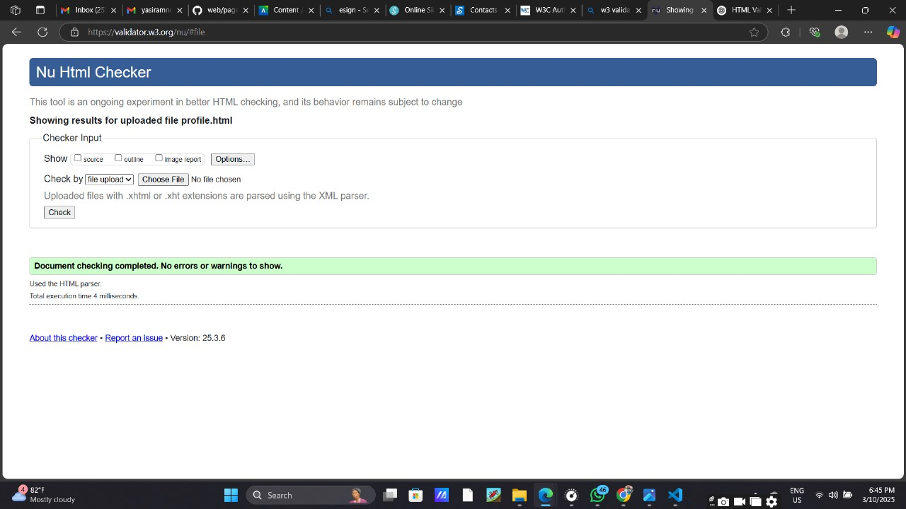
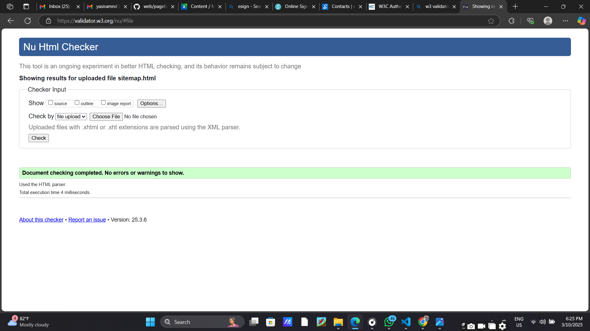

User Profile
When I checked for validation I had some errors occured.The character encoding was not declared and the element 'button' must not appear as descendat of the 'a' element.I fixed it and no errors or warnings were shown later.
Back to Page Editor page
Sitemap
No error or warning occured.
Back to Page Editor page
Content Page
No error or warning was occurred.